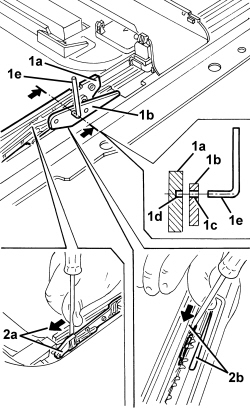

7030B54 SUN ROOF (ASSEMBLY) - ALIGNMENT AND POSITIONING
- Path
- Procedures > 70 FITTINGS > 7030 SUN ROOF/GLASS PANEL > 7030B SLIDING ROOF > 7030B54 SUN ROOF (ASSEMBLY) - ALIGNMENT AND POSITIONING
- Kind
- repair procedure (removal / refitting; the operation number is the code)
- Applies to
- all engines; all production periods
- Interactive page
- https://sloeber94.github.io/elrnDB/alfa/159/en/#/939004834
Applies to: all engines; all production periods
- SLIDE ALIGNMENT CHECK.
- If there are no problems that adversely affect operation, place the sun roof in the closed position.
Op. 7030B18 SLIDING ROOF GLASS PANEL - R+R
1. Simultaneously check the alignment of the feedthrough opening (1c) with the blind opening (1d) on the slides (1a) and (1b) on both sides of the sun roof; carry out the check using a pin (1e) with the same diameter as the openings. If the result is negative, align the slides (1a) and (1b) as described below.
- SLIDE ALIGNMENT.
Op. 7040E40 MODULAR FRONT COURTESY LIGHT - R R
Op. 7030B70 SUN ROOF MOVEMENT MOTOR - R+R
2. Manually position the main slides (2a) in the forwards end of travel position, then move the slides (2b) on both sides forwards until the feedthrough opening (1c) is aligned with the blind opening (1d); carry out the check using a pin (1e).
- Fit the control motor in these conditions.
Op. 7030B70 SUN ROOF MOVEMENT MOTOR - R+R
See descriptions 7030 SUN ROOF/GLASS PANEL

Applies to: all engines; all production periods
Op. 7030B18 SLIDING ROOF GLASS PANEL - R+R
- Check that the sun roof is working properly.
Topics linked from this page (4)
- 7030 SUN ROOF/GLASS PANEL
- 7030B18 SLIDING ROOF GLASS PANEL - R+R
- 7030B70 SUN ROOF MOVEMENT MOTOR - R+R
- 7040E40 MODULAR FRONT COURTESY LIGHT - R R